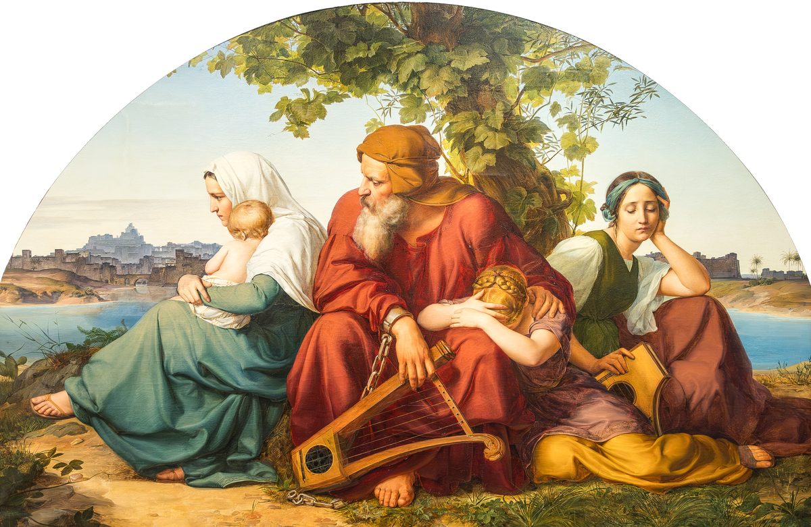

Levítico 26 — La Traducción Mister

Pintado en 1832 por el romántico alemán Eduard Bendemann, este lienzo en forma de medialuna (diseñado originalmente para una lunéta) muestra el exilio tal como lo describen las propias maldiciones de este capítulo —no la batalla, sino su secuela: arpas depuestas, una cadena rota pero la libertad todavía sin restaurar, una ciudad amurallada visible al otro lado del agua pero fuera de alcance. La escena no tiene un solo versículo detrás; se lee en cambio como los vv33-39 de este capítulo y el Salmo 137, 'junto a los ríos de Babilonia, allí nos sentábamos y llorábamos' (todavía no en estas páginas), pintados como el mismo instante.
.jpg){kind=link}
Levítico 26 —ídolos, sábado, santuario: todo el código en dos versículos
Antes de que comiencen las bendiciones y maldiciones, dos versículos cierran en miniatura las propias prioridades de apertura del Código de Santidad: sin ídolos (haciendo eco de las propias advertencias repetidas de este libro, más recientemente en Levítico 19:4, ya en estas páginas), el sábado guardado, el santuario reverenciado. Todo lo que sigue —cuarenta y cuatro versículos de bendición y maldición— depende enteramente de estas dos cosas y de los diez mandamientos que comprimen.
Las bendiciones —lluvia, cosecha, paz, y un pueblo que por fin puede mantenerse erguido
Diez versículos de bendición avanzan del campo a la nación y a algo más cercano que ambos: lluvia a su tiempo, cosecha que se extiende tanto hacia la siguiente que la trilla se solapa con la vendimia y la vendimia con la siembra (v5), paz lo bastante segura para acostarse sin nada que temer, y una victoria tan total que cinco persiguen a cien, y cien persiguen a diez mil —una proporción que salta por un factor de veinte en vez de mantenerse constante, porque la obediencia se multiplica en vez de sumarse simplemente. Pero el centro real de la bendición no es el clima ni la guerra: «pondré mi morada en medio de vosotros… andaré en medio de vosotros» (vv11-12) reutiliza, deliberadamente, el mismo verbo de Dios «caminando» en el jardín en Génesis 3:8 (todavía no en estas páginas en español, aunque ya existe en la edición en inglés de este proyecto) —la misma intimidad que el Edén perdió, ofrecida de vuelta como recompensa del pacto, y el mismo lenguaje que Juan 1:14 y Apocalipsis 21:3 (ninguno todavía en estas páginas) usarán para Dios «habitando» de nuevo entre la humanidad. ⚠ El v13 cierra con qomemiyut, una palabra rara que este proyecto vierte «erguidos» —personas liberadas que por fin pueden mantener la cabeza en alto, no solo liberadas sino restauradas en dignidad.
Comienzan las maldiciones —y la estructura es el mensaje
Lo que sigue son treinta y dos versículos de consecuencia creciente, no una lista plana —cuatro oleadas separadas (vv18, 21, 24, 28), cada una abierta por la fórmula idéntica, «añadiré siete veces más castigo sobre vosotros por vuestros pecados», cada una desencadenada específicamente por la continua negativa de Israel a responder a la oleada anterior. La primera oleada (vv16-17) es enfermedad y derrota militar: terror, enfermedad consuntiva, fiebre, una cosecha sembrada en vano porque un enemigo la come antes que Israel, y el detalle particularmente sombrío del v17 —huir «sin que nadie os persiga», la psicología de la derrota superando a cualquier ejército real.
Segunda oleada —cielo como hierro, tierra como bronce
El primer «siete veces más» (v18) apunta directamente a la agricultura con una imagen llamativa: el cielo mismo convertido en hierro inflexible, el suelo en bronce —ninguna lluvia puede caer a través del uno, nada puede crecer del otro. «Vuestra fuerza se consumirá en vano» (v20) hace eco, en sentido inverso, de la misma futilidad ya tejida en la sección de bendición de este libro: donde la obediencia hizo que la trilla se extendiera hasta la vendimia, el desafío vacía ese mismo trabajo de cualquier resultado.
Tercera oleada —bestias fieras, y una palabra que este capítulo usa siete veces
⚠ «Andar en oposición» (halakh imi keri) es una de las verdaderas dificultades de traducción de la Torá —una palabra rara que no aparece en ningún otro lugar de la Biblia hebrea con este sentido, siete veces, solo en este capítulo (vv21, 23, 24, 27, 28, 40, 41), en sí mismo un eco estructural de la fórmula cuádruple de castigo «siete veces» que lo rodea. RV60 lee «andar contrario a mí», la opción más literal; NVI se desplaza a «te muestras hostil conmigo», leyendo la raíz disputada como hostilidad en vez de mera imprevisibilidad. Véase la entrada del diccionario para el rango completo de lecturas. Aquí la tercera oleada envía bestias fieras a privar a Israel de sus hijos y su ganado, dejando los caminos «desiertos» —demasiado peligrosos para transitar, el propio campo vuelto hostil.
Cuarta oleada —asedio, y diez mujeres horneando en un solo horno
«Espada vengadora, en venganza del pacto» (v25) duplica la raíz hebrea de venganza sobre sí misma —la misma construcción intensificadora que este proyecto ya ha señalado en frases como el propio «pulular con pululaciones» de Génesis 1 (ya en estas páginas), aquí vuelta hacia una pena legal en vez de la abundancia. ⚠ La imagen del v26 es doméstica y devastadora precisamente porque es a pequeña escala: diez mujeres, que normalmente cada una hornearía la tanda completa de un hogar, ahora comparten un solo horno porque tanto el combustible como la harina se han agotado, repartiendo el pan con cuidado por peso —y aún así nadie come lo suficiente. Este es el versículo que Ageo 1 (ya en estas páginas) aplicará después directamente a la propia pobreza posterior al exilio de Judá: sembrar mucho y recoger poco, comer sin saciarse, la maldición del pacto todavía operando a una escala mucho menor.
Quinta oleada —el peor versículo de la Torá, y la desolación total
⚠ El v29 es la línea más sombría de este libro: padres comiendo la carne de sus propios hijos bajo asedio. Esto no es una invención para causar impacto; se recuerda por nombre en la propia historia posterior de Israel —en el asedio de Samaria (2 Reyes 6:28-29, todavía no en estas páginas) y en la caída de Jerusalén en el año 586 a.C. (Lamentaciones 2:20 y 4:10, ya en estas páginas, que nombran esta pena exacta del pacto como lo que realmente sucedió). El resto de la oleada es total: santuarios destruidos, cadáveres amontonados sobre las ruinas de los ídolos que no lograron salvar a nadie, ciudades arrasadas, la tierra misma dejada tan vacía que hasta los enemigos que se mudan a ella quedan «asombrados» (v32) —conquista sin triunfo, porque no queda nada que valga la pena conquistar.
La tierra cobra lo que se le negó —el exilio como el propio sábado de la tierra
⚠ Los vv34-35 nombran el propósito teológico detrás del exilio en términos que este proyecto ya ha establecido: la tierra por fin «goza de sus sábados» que se le negó —el pago directo de la propia ley del año sabático de Levítico 25 (ya en estas páginas), revelada ahora como aplicable a escala nacional, no meramente un ideal legal que Israel podía ignorar en silencio. «El sonido de una hoja arrastrada por el viento» (v36) poniendo en fuga a los fugitivos es una de las imágenes más crudas de terror psicológico de la Biblia —no un ejército, ni siquiera una amenaza real, solo el susurro de una sola hoja muerta basta para provocar una desbandada, porque la culpa ya ha hecho el trabajo de un enemigo.
Confesión, un corazón incircunciso, y un pacto recordado hacia atrás
⚠ El «corazón incircunciso» del v41 (lev ha-arel) toma la señal física del pacto, dada primero en Génesis 17:11 (todavía no en estas páginas en español, aunque ya existe en la edición en inglés de este proyecto), y la aplica metafóricamente al órgano que en realidad necesita el corte —una figura que este proyecto espera que regrese en Deuteronomio 10:16 y Jeremías 4:4 (ninguno todavía en estas páginas), y sobre la que Pablo construirá todo un argumento en Romanos 2:29 (ya en estas páginas): la circuncisión real es asunto del corazón, no de la carne. El v42 recuerda el pacto patriarcal en orden cronológico inverso —Jacob, luego Isaac, luego Abraham— la generación más cercana primero, como si retrocediera por la propia memoria de una familia en vez de recitar una fórmula fija hacia adelante. El final real del capítulo no es la desesperación: incluso en el punto más lejano del exilio, el v44 promete que Jehová no «quebrantará mi pacto», y el v46 cierra con un colófon —«estos son los estatutos, las ordenanzas y las leyes»— que se lee como el cierre pretendido de todo el código legal del Sinaí que comienza en Éxodo 19, con Levítico 27 llegando después como su propio apéndice.
Notas sobre esta traducción
Decisiones. El hebreo y el español de Levítico 26 corren ambos 1–46 —comprobado contra el texto masorético, sin salto de versificación. Solo tres pausas de párrafo masoréticas dividen todo este capítulo: abierta tras el v2, cerrada tras el v26, abierta tras el v46 —la sección de maldiciones (vv14-45) es una sola unidad ininterrumpida en el rollo, a juego con su propia escalada ininterrumpida de contenido. Dos nuevas entradas de diccionario: keri, la palabra genuinamente disputada de «oposición»/«encuentro casual» que ocurre siete veces, solo aquí; y qomemiyut, «erguidos», que ocurre solo en el v13.
Ecos pagados. El propio verbo de Génesis 3:8 para Dios caminando en el jardín (todavía no en estas páginas en español), reutilizado en el v12 para Dios caminando entre un pueblo redimido; la propia construcción intensificadora «pulular con pululaciones» de Génesis 1 (ya en estas páginas), el mismo patrón de duplicación detrás de la «venganza del pacto» del v25; la señal del pacto de la circuncisión de Génesis 17:11 (todavía no en estas páginas en español), aplicada metafóricamente al corazón en el v41; la prohibición de ídolos de Levítico 19:4 (ya en estas páginas), retomada para abrir este capítulo; la propia ley del año sabático de Levítico 25 (ya en estas páginas), revelada en los vv34-35 como lo que el exilio en realidad hace cumplir; Lamentaciones 2 (ya en estas páginas), que nombrará la pena exacta del pacto de este capítulo como literalmente cumplida en la caída de Jerusalén; y Ageo 1 (ya en estas páginas), que aplica la propia maldición de futilidad del v26 a una pobreza mucho menor y posterior.
Ecos plantados. Deuteronomio 28 (todavía no en estas páginas), el otro gran capítulo de bendiciones y maldiciones de la Torá, que corre la misma estructura con mayor extensión; 2 Reyes 6:28-29 (todavía no en estas páginas), donde la maldición de canibalismo infantil del v29 se recuerda como hecho histórico en el asedio de Samaria; 2 Crónicas 36:21 (todavía no en estas páginas), que citará el propio lenguaje del sábado de la tierra de este capítulo como literalmente cumplido por la duración del exilio babilónico; Deuteronomio 10:16 y Jeremías 4:4 (ninguno todavía en estas páginas), que repetirán la propia figura del corazón incircunciso del v41; y Romanos 2:29 (ya en estas páginas), donde Pablo construye directamente sobre ella.
⚠ Nota sobre el orden: Levítico está en estas páginas en los capítulos 1, 2, 3, 4, 5, 6, 7, 8, 9, 10, 11, 12, 13, 14, 15, 16, 17, 18, 19, 20, 21, 22, 23, 24, 25, 26, y 27. Levítico está completo en estas páginas.